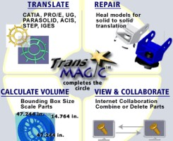

|
 TransMagic,
Dünya CAD marketinin büyüyen iþ hacminde, deðiþik marka sistemlerin
CAD formatlarýnýn birbirleri ile dosya alýþveriþi ihtiyacýndan
doðan bir yazýlýmdýr. Herhangi bir marka CAD yazýlýmýný direkt
olarak okur ve diðer bir marka herhangi bir CAD formatýnda
yazabilme kabiliyetine sahiptir. TransMagic,
Dünya CAD marketinin büyüyen iþ hacminde, deðiþik marka sistemlerin
CAD formatlarýnýn birbirleri ile dosya alýþveriþi ihtiyacýndan
doðan bir yazýlýmdýr. Herhangi bir marka CAD yazýlýmýný direkt
olarak okur ve diðer bir marka herhangi bir CAD formatýnda
yazabilme kabiliyetine sahiptir.
TransMagic
günümüz teknolojisinde çeþitli marka CAD/CAM yazýlýmlarýnýn
ve birbirleri ile rakip olan CAD yazýlýmlarýnýn buluþtuðu
bir çeviricidir.
Yazýlým
200 adet CAD formatý destekler. Sistem içersinde COLLABORATE,
REPAIR (hasarlý ve bozulmuþ dosyalar) Tamirinde, ölçülendirme,
volume, scale gibi bir CAD yazýlýmýndan beklenen tüm bilgileri
içinde barýndýrýr, IGES veya herhangi bir formatdaki Montaj
dosyalarýný içine alýrken "feature"lara göre ayýrýr
ve düzenler. Hasarlý kýsýmlarý onarýr ve istediðiniz CAD formatýna
çevirir.
TransMagic
5 ana unsurdan oluþur
1-
Translate
2- Repair
3- Calculate Valume
4- View & COLLABORATE
5- Tool&Die and Mold makers
1)
Translate
TransMagic birbirleri ile transferlerde dramatikleþen 3D CAD
modellerin zamandan tasarrufunu saðlamak için kullanýlýr.
Transmagic popüler 2D/3Dn CAD formatlarýný, montajlarý ve
CAM uygulamalarý için kullanýlýr. TransMagic bünyesinde barýndýran
200'e yakýn CAD formatýnýn yaný sýra, Solidworks, AutoCAD,
CATIA V4 veya V5, Pro/ENGINEER, UG, T-FLEX, Mastercam, SURFCAM,
I-deas, 3ds max, Cimatron/E ve daha birçok yazýlým çeviricisine
sahiptir. CATIA "translate"i çok hýzlý bir performansta
okur ve yazar.
2)
Repair
TransMagic 3D CAD datalarýnýn durumunu inceleyerek optimize
eder ve bozuk olan dosyalarý düzelterek düzenler. Tolerans
(GAP tolerance) kayýplarýný inceler, bulur ve tekrar istenilen
hassasiyete getirir. Kayýp ve bozuk yüzeyleri istenildiðinde
3 aþamada düzeltir ve onarýr.
3)
Calculate Valume
TransMagic Ýçine aldýðý 3D CAD formatlarýný alan, hacim, otomatik
boyutladýrma gibi iþlemlere atar. Gelen herhangi 3D modelin
kesitlerini çýkarýr ve bunlarý hesaplamasýný da ayrýca yapar.
Ölçek atayabilir. Büyük montaj parçalarýný ürün aðacý olarak
gösterebilir ve bunlarýn tek tek hesaplamalarýný, aðýrlýklarýný
çýkartarak ana montajýn sonucunu verebilir.
4)
COLLABORATE
TransMagic, iþ istasyonlarý ve sunucularla haberleþebilir.
Ortak IP/HHTP adresi üzerinden yüzlerce-binlerce km uzaklýktaki
diðer iþ ortaðýnýz ile model üzerinde incelemeler yaparak
toplantý yapabilirsiniz. Örneðin; Japonya'daki bir iþ ortaðýnýz
ile Türkiye'nin herhangi bir yerinde 3D model revizyonu yapabilir,
parça üzerinde teklif verebilirsiniz. Bu yazýlým, ayný zaman
da fabrikalardaki sunucu aðlarýnda da kullanýlabilir. Ýsterseniz
3D web formatýnda da yayýnlayabilirsiniz.
5)
Tool&Die and Mold makers
TransMagic, kalýp imalatcýlarý için de yardýmcý olur. Fason
kalýpçýlara gelen deðiþik markalardaki CAD modelleri içine
alarak; parça hacim hesaplamasý yapar, ölçülerini çýkartýr,
parça kesin kütüðünü verir (gerekirse paylý; Sipariþ edilecek
kütük için önemli), çekme payý atamanýza olanak sunar. Üretici
firma bu tür iþlerde % 56 ile %90 arasý zamandan tasarruf
garantisi vermektedir.
Desteklediði
formatlar:
- Okuma
formatlarý:
CATIA V5 *.CATpart, *.CATproduct (Available in specialty
products)
CATIA V4 *.model, *.exp, *.dat, sequential files
Unigraphics *.prt
Pro/ENGINEER *.prt, *.asm
STEP *.stp
IGES *.igs
Parasolid *.x_t
ACIS *.sat
HSF *.hsf
StereoLithography *.stl
- Yazma
formatlarý:
CATIA V5 *.CATpart (Available in specialty products)
CATIA V4 *.model
STEP *.stp
IGES *.igs
Parasolid *.x_t
ACIS *.sat
HSF *.hsf, *.hmf
HTML *.htm
StereoLithography *.stl
Daha
fazla bilgi için: www.transmagic.com
Ýrtibat:
Cenk
Türkmen
cturkmen@3dcadcam.com.tr
3D
CAD/CAM TECHNOLOGY
Yalý yolu Sok. Ýsmail Ergin Ýþ Merkezi No: 56/A-4
Üstbostancý Kadýköy / Ýstanbul
Tel: (216) 380 39 48
GSM: (544) 580 32 81
Faks: (216) 380 01 18
www.3dcadcam.com.tr
|